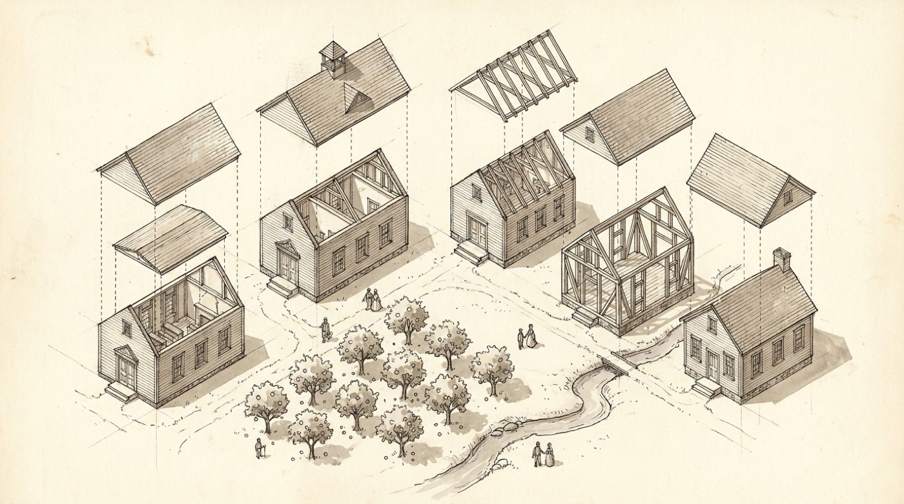

Why it works
Affirmations argue with your brain. You say "I am wealthy" and a quiet voice answers "no you're not," and that argument is the whole experience. A news article skips the argument. When a neutral third party reports your life as accomplished fact, with a dateline, background, and quotes, your nervous system files it the way it files any other reporting: as something that already happened. The believability is the mechanism. Which means the entire craft is in making it believable: real names, real towns, real numbers, restrained language, no hype.
The protocol
- The sit-down. Set aside deep time. The full version is four hours, phone in another room. Write what you want your life to look like in the third person, present tense. Not "I will have a workshop" but "[Name] walks into the workshop." Don't list goals; write scenes. Use the ten prompts below.
- Build the dossier. Pull the true facts of your past: hometown, family, the schooling, the jobs, the leap, the numbers you've actually written in notebooks. The profile needs verifiable history to make the future feel reported. If you journal, you've already written most of this.
- Generate the script. Feed the dossier and your scenes into an AI with the generation prompt below. Ask for roughly 150 words per minute of audio; 800 words is a strong five-minute first cut.
- Give it a voice. ElevenLabs, text to speech. Do not clone your own voice. The illusion is a stranger reporting on you, with no reason to flatter you. Pick a calm documentary narrator and use the settings below.
- Listen every night. Export the MP3 to your phone. Play it in bed, low volume. Take three slow breaths before you press play. Let the body settle first, then let the story land. Repetition is the practice; don't re-cut it for at least 30 days.
The sit-down

Ten prompts, in order. Third person, present tense, no editing. Scenes, not goals. In every scene, note what it feels like in the body. The feeling is the active ingredient.
- 6:00 AM. They wake up. Where? What does the light do? First sound? Write 20 minutes without stopping.
- The walk. They step outside. Walk the whole property. Name every structure, everything growing, everything being built.
- The work block. What are they actually doing at 10 AM on a Tuesday? Who's on the call? What do they no longer do, because someone else does?
- The hands. Afternoon, away from screens. What's on the workbench? What's the material? Who is it for?
- The table. Dinner. Who's there. What's on it. What's the conversation.
- The money. Write the balances. Write the monthly number. A big opportunity shows up; what happens in the first sixty seconds?
- The people they're building for. What do they call them? What did they do today? What are they teaching without saying it out loud?
- The hard part. What did they give up? What do they still fight? Write it honestly. The script is stronger with a shadow in it.
- The return. They go back to where they came from. What's changed? Who's standing there with them?
- 9:00 PM. They write one line in a journal. What is it?
The generation prompt
Paste this into your AI along with your dossier and your sit-down scenes. Fill the brackets.
Voice settings
ElevenLabs, Text to Speech. Pick a mature documentary narrator from the voice library: warm, neutral, unhurried. Test three; keep the one that makes your chest drop.
| Setting | Value | Why |
|---|---|---|
| Model | Multilingual v2 | Most stable for long, even reads. Flash is built for speed, not warmth. |
| Stability | 50 to 60 | This should sound read off a page, not performed. |
| Similarity | 75 | Standard. |
| Style | 0 to 15 | Flat delivery is more believable than dramatic delivery. |
| Speed | 0.95 | Slightly under normal. Give it room. |
Make it more real
- Layer a quiet ambience bed under the voice (birds, wind, distant water) around minus 30 dB. News pieces have room tone; silence sounds synthetic.
- One restrained music sting at the open, returning at the close. Not throughout.
- Run the final mix through a free enhancer (Adobe Podcast Enhance) to glue voice and ambience into one recording.